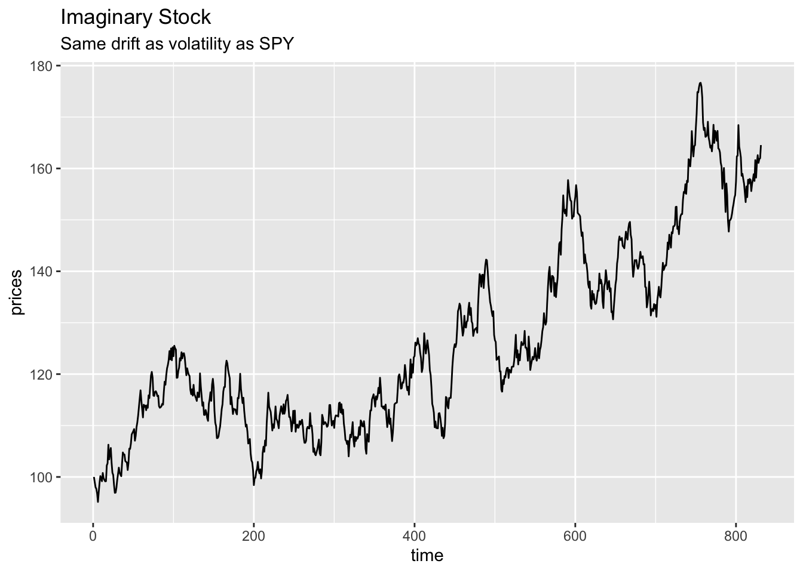
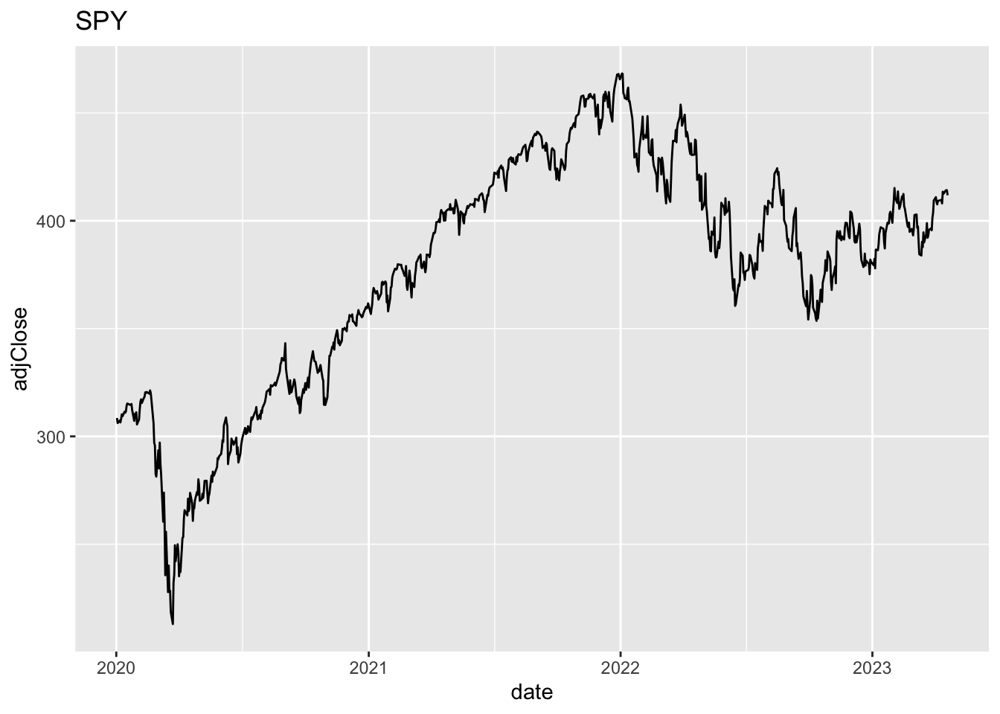
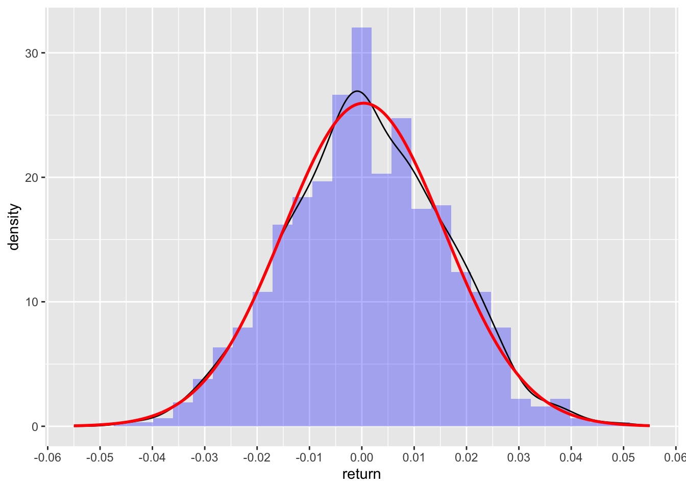
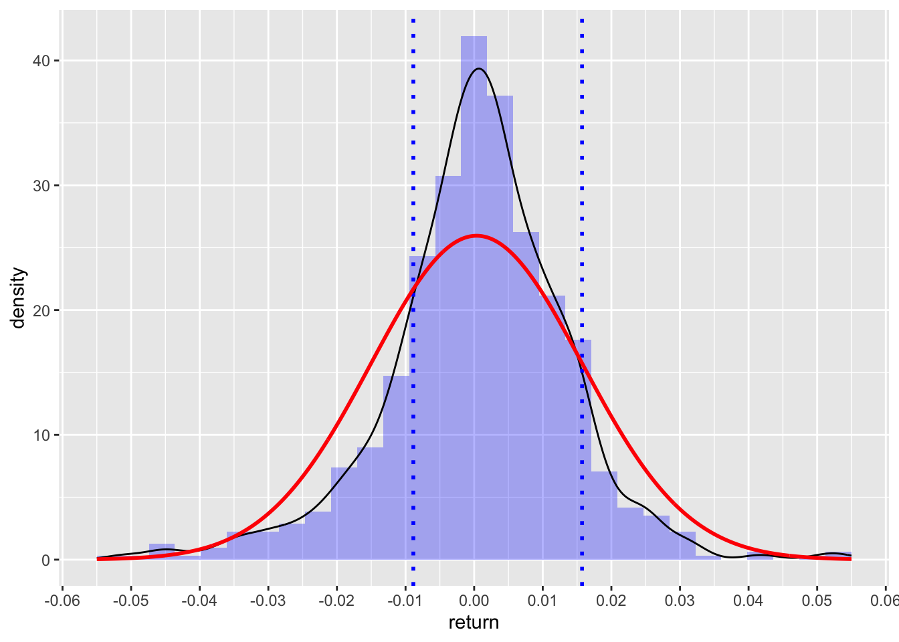
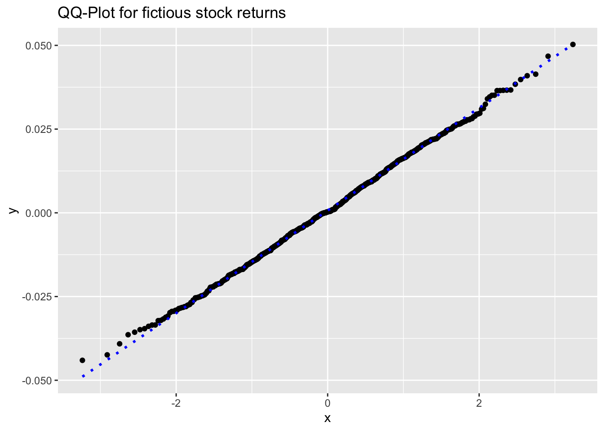
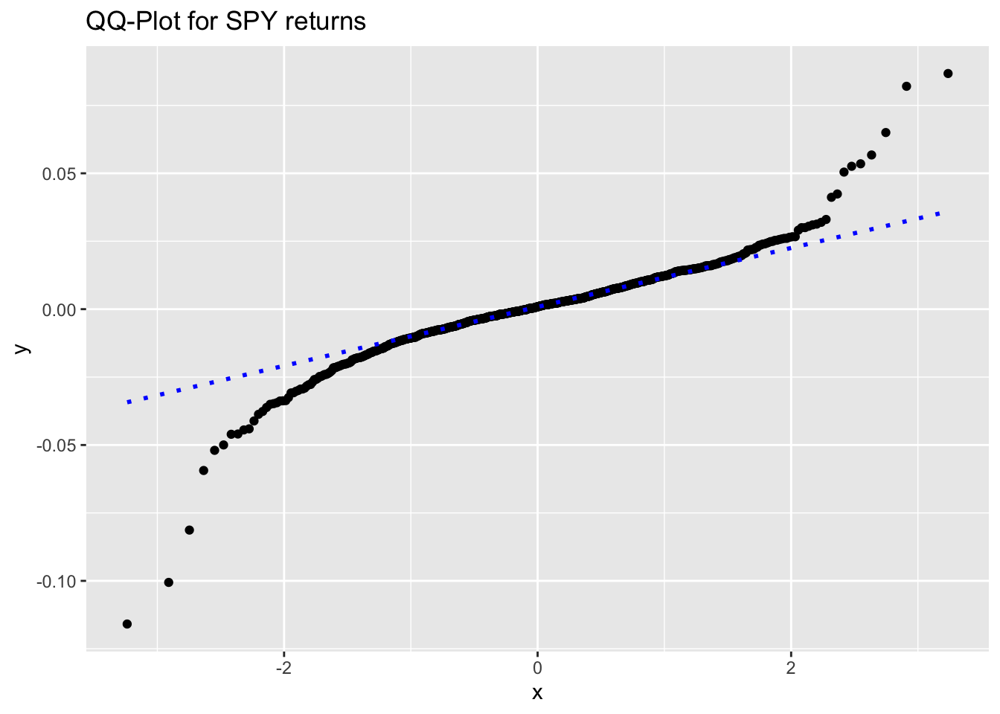

Introduction
As mentioned in one of our previous posts, we know that in quantitative finance, assets returns are assumed to be random. That being said they are not totally normally distributed. This post is to digg in a bit further in assessing the normality (or non-normality) of equity returns.
As reminder, a dataset can be said to be normally distributed if its probability density function can be modelled by \[P(X = x) = \frac{1}{\sigma \sqrt{2 \pi}} \cdot e^{-\frac{(x-\mu)^2}{2 \sigma^2}}\]
When testing for normality, there are many ways to get there.
- Visual ways: histogram, density plot and QQ-plots
- Using Skewness or Kurtosis
- Statistical tests such as the Shapiro-Wilk test (small to medium sample size, \(n \leq 300\)) or the Kolmogorov-Smirnov test
Let’s start by considering an ETF (low-ish volatility) like the SPY500.
To better illustrate our point, we’ll also consider a fictitious stock with random and almost perfectly normally distributed returns.
From previous post, returns can be explained with a drift rate + some randomness: \[R_i = \mu \delta t + \phi \sigma \delta t^{1/2}\]
Comparing SPY returns with a similar imaginary stock
Let’s make some assumptions on how to get the drift rate and volatility of SPY. Using all the trading sessions since 01 Jan 2020, we’ll use the mean historical returns and standard deviation of returns as drift and volatility.
df_spy <- read_csv('../../raw_data/SPY.csv') |>
select(date, adjClose) |>
arrange(date) |>
mutate(return = log(adjClose / lag(adjClose))) |>
filter(date > '2020-01-01')
drift = mean(df_spy$return)
sigma = sd(df_spy$return) So over the last 3-ish years, SPY had an annualized drift rate of 9.04% with an volatility of 24.4%
Let’s consider now an imaginary stock with a similar drift rate and standard deviation as SPY.
set.seed(21042023)
phi = rnorm(nrow(df_spy), mean = 0, sd = 1) # create randomness from a normal distribution
df <- tibble(time = 1:length(phi),
phi = phi,
return = drift + sigma * phi) # create the return as drift + randomness
prices = c(100)
for (i in 2:(nrow(df))) {
prices[i] = prices[i-1] * (1 + df$return[i]) #create a vector of prices based on the returns
}
df <- add_column(df, prices)Let’s have a quick check that indeed mean and standard deviation of returns are similar.
| Drift | Volatility | |
|---|---|---|
| SPY | 3.6^{-4} | 0.0152 |
| Fictitious Asset | 7.3^{-4} | 0.0154 |
ggplot(df, aes(x = time, y = prices)) +
geom_line() +
labs(title = 'Imaginary Stock',
subtitle = 'Same drift as volatility as SPY')
ggplot(df_spy, aes(x = date, y = adjClose)) +
geom_line() +
labs(title = 'SPY')
Visual checks on imaginary stock vs SPY
Usual visual checks for normality are the histogram and the QQ-plot.
Histograms
Let’s see how well the returns stack to our imaginary stock (with close to perfect pseudo-randomness)
ggplot(df, aes(return)) +
geom_histogram(aes(y = after_stat(density)), alpha = 0.3, fill = 'blue') +
geom_density() +
stat_function(fun = dnorm, n = nrow(df), args = list(mean = drift, sd = sigma), color = 'red', size = 1) +
scale_y_continuous() +
scale_x_continuous(limits = c(-0.055, 0.055), n.breaks = 9)
The black line is the actual density of returns, while the red line is the density of the normal distribution with same drift and volatility as earlier. Lines are pretty close to each other.
And now onto the histogram on SPY (again same drift and volatility) as fictitious stock above.
ggplot(df_spy, aes(return)) +
geom_histogram(aes(y = after_stat(density)), alpha = 0.3, fill = 'blue') +
geom_density() +
geom_vline(xintercept = drift+sigma, color = 'blue', linetype = 3, linewidth = 1) +
geom_vline(xintercept = drift-(0.6*sigma), color = 'blue', linetype = 3, linewidth = 1) +
stat_function(fun = dnorm, n = nrow(df), args = list(mean = drift, sd = sigma), color = 'red', size = 1) +
scale_y_continuous() +
scale_x_continuous(limits = c(-0.055, 0.055), n.breaks = 9)
And here, we clearly see the big disconnect from normality: above expected number of returns at the mean (aka too peaked), less returns next to the mean (between 1 and 2 or 2 1/2 sd) and then higher number of observations than expected in the tails (aka fat tails). Distribution of returns for equity are interesting in that sense: both too peaked and fat tails.
QQ Plots
Another way to visually check for normality is to use a quantile-quantile plot (aka QQ-plot). On the y-axis, we have the returns, on the x-axis the theoretical quantiles.
ggplot(df, aes(sample = return)) +
stat_qq() +
stat_qq_line(color = 'blue', linetype = 3, linewidth = 1) +
labs(title = 'QQ-Plot for fictious stock returns')
And now the QQ-plot for the returs of SPY.
ggplot(df_spy, aes(sample = return)) +
stat_qq() +
stat_qq_line(color = 'blue', linetype = 3, linewidth = 1) +
labs(title = 'QQ-Plot for SPY returns')
Oh boy! Again, our second plot clearly indicate how the returns deviate from normality.
This QQ-plot can also be used to check for asymetry in the distribution of returns. We can see a slightly left skew distribution (a negatively skew distribution).
Skewness and Kurtosis
Skewness and Kurtosis are the third and fourth statiscal moments of a distribution.
Skewness
Ideally, skewness as a measure of symmetry should be close to 0 (perfectly symmetric).
Let’s test the symmetry of our 2 sets of returns. Unfortunately, we did not find any function to calculate skewness in base R (seems strange!).
moments::skewness(df$return)[1] 0.0398789moments::skewness(df_spy$return)[1] -0.7418496As expected, our fictitious stock has almost 0 skew (symmetric around the mean), while the SPY has a moderate negative skew (which we could see already on the QQ-plot and histogram.)
Kurtosis
moments::kurtosis(df$return)[1] 2.879684moments::kurtosis(df_spy$return)[1] 12.75883Again, our fictious asset has kurtosis pretty close to perfect normality (almost 3). SPY deviate very much from normality and displays leptokurotic kurtosis.
Statistical tests
Shapiro-Wilk test
Shapiro-Wilk test should actually not be used on large data set. Although, we use it here for demonstration purposes, results should be interpreted with a big spoon of salt.
Let’s first test on our fictitious equity.
shapiro.test(df$return)
Shapiro-Wilk normality test
data: df$return
W = 0.99895, p-value = 0.9215Expected, as the randomness of our fictitious stock was randomly distributed.
And then on the return of SPY
shapiro.test(df_spy$return)
Shapiro-Wilk normality test
data: df_spy$return
W = 0.894, p-value < 2.2e-16